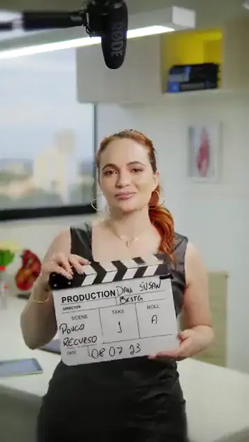
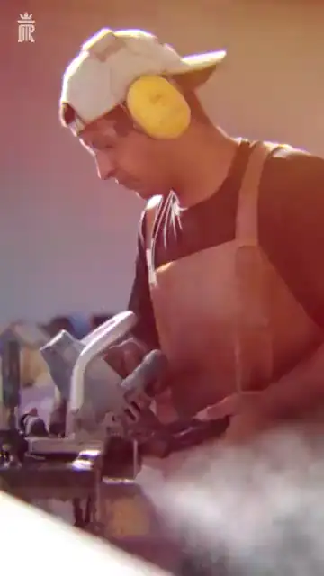

Vídeos verticais para Instagram
Quem não aparece não é lembrado.
Pode me chamar de Saramago. Reels do roteiro à postagem. Dourados, MS.
- 10Clientes no portfólio
- 60+Vídeos entregues
- 9:16Formato do feed
Vídeos que já foram ao ar
Reels finalizados para clientes reais. Escolha uma área e toque em um vídeo para assistir com som.
Nenhum vídeo nessa área ainda.
Serviços
Do roteiro ao post
-

01 · O que eu mais façoReels e vídeos verticais
Roteiro, captação e edição de vídeos 9:16 para o Instagram, com a cara da sua marca e o ritmo do feed.
-
02
Conteúdo do mês
Um calendário de vídeos pensado dia a dia, para a sua marca aparecer com constância.
-
03
Anúncios
Eu monto e subo os anúncios com os seus vídeos. A verba de mídia fica à parte.
-

04Sites
Uma página rápida para receber quem chega pelo Google e pelo Instagram.
Processo
Como eu trabalho
- 01
Roteiro
Ideia, gancho e sequência de cenas antes de ligar a câmera.
- 02
Captação
Câmera, luz e áudio no lugar, já pensando no enquadramento vertical.
- 03
Edição
Cortes no ritmo do feed, legenda, cor e acabamento.
- 04
Entrega
Vídeo pronto para postar, com capa.
Sobre
Pode me chamar de Saramago.
Gravo e edito vídeos desde o roteiro até a postagem. O que eu mais faço são reels verticais para o Instagram, e o que eu mais gosto é ver o vídeo certo transformar espectadores em clientes.
Quem já apareceu: Carol Queder · Dra. Daniele Susan · Dra. Nathalia Poloni · Dra. Gabriela Chaves · Vanessa Ferreira · Referência Marmoraria · Fabiele Fróes · Camila Rocha · Pingo de Gente · Bel Guerra
Contato · Dourados, MS
Vamos gravar?
Me conta o que você precisa. Eu respondo pelo WhatsApp.